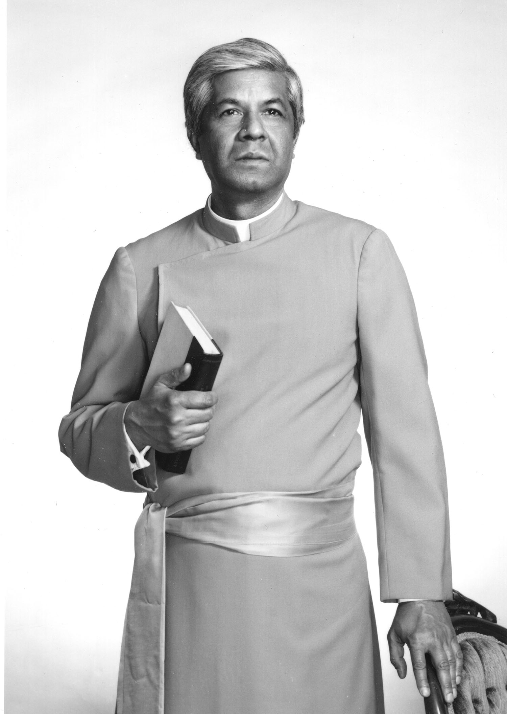

Teachings


Swami Adiswarananda
Swami Adiswarananda (1925-2007) was born in West Bengal, India. He received his undergraduate degree and Master's degree from the University of Calcutta. During his student days he was inspired by Swami Vivekananda and his call to the "service of God in man." In 1954 he joined the monastic Order of Sri Ramakrishna and was ordained a monk in 1963. As a monk, he served the Order in various capacities in its educational and cultural centers. He taught religious subjects for several years at one of the premier colleges of the Order, the Ramakrishna Mission Vidyamandira at Belur, West Bengal, India. In 1966 he was sent to the Advaita Ashrama at Mayavati in the Himalayas, where he was Editor of Prabuddha Bharata: Awakened India, the English-language monthly journal on religion and philosophy published by the Order. He served in that capacity until 1968, when he was sent by the Order to the Ramakrishna-Vivekananda Center of New York to assist Swami Nikhilananda. Upon the passing away of Swami Nikhilananda in 1973, Swami Adiswarananda became the Minister and Spiritual Leader of the Center, a post that he held until his passing away in 2007.
Literary Work
The writings of Swami Adiswarananda appeared in many books and journals, published in the United and abroad, including Prabuddha Bharata (India), Vedanta Kesari (India), the two English-language monthly journals of the Order, and Vedanta for East and West (England). The Swami wrote the following books:
The Spiritual Quest and the Way of Yoga – The Goal, the Journey and the Milestones, Sri Ramakrishna, the Face of Silence; Editor, Sri Sarada Devi, The Holy Mother – Her Teachings and Conversations; Editor, Meditation & Its Practices - A Definitive Guide to the Techniques and Traditions of Meditation in Yoga and Vedanta, The Vedanta Way to Peace and Happiness, The Four Yogas - A Guide to the Spiritual Paths of Action, Devotion, Meditation and Knowledge, Vivekananda, World Teacher - His Teachings on the Spiritual Unity of Humankind
The Swami also contributed chapters to a number of books, among which are the following:
The preface to Tagore - The Mystic Poets translated from Bengali to English by the author, "Philosophy of History: Hindu View" in the book Contemporary Indian Philosophers of History, edited by T.M.P. Mahadevan and Grace E. Carins (published by the World Press, Calcutta, India), Hindu View of Death and Life After Death in the book Encounter with Eternity: Religious Views of Death and Life After Death, edited by Christopher Jay Johnson and Marsha G. McGee (published by the Philosophical Library, New York), "Living the Mature Way" in the book Meditation: Monks of the Ramakrishna Order (published by the Ramakrishna Vedanta Center, Bourne End, Great Britain), "Sri Ramakrishna and His God Consciousness" in the book Sri Ramakrishna The Power and Glory (published by Sri Ramakrishna Math, Madras, India), "Facing the Restless Mind" in the book Living Wisdom: Vedanta in the West (published by the Vedanta Press, Hollywood, California), "Swami Vivekananda: His Message of Vedanta and the Western Way" in the book Vivekananda: The Great Spiritual Teacher (published by Advaita Ashrama, Calcutta, India).
Interfaith Activities
Swami Adiswarananda was a frequent participant in the programs and activities of major interfaith organizations. In 1993, the Swami took part in the Parliament of World's Religions, which was held in Chicago to commemorate the Centenary of the first Parliament of 1893. On that occasion, Swami Adiswarananda was selected to be one of the 250 representatives in the Parliament's Assembly of Religious and Spiritual Leaders. During his tenure, Swami Adiswarananda organized a number of significant interfaith services and programs, including a major 3-day event in New York City to commemorate the 100th Anniversary of Swami Vivekananda in America. Swami Adiswarananda was a frequent lecturer at colleges and universities and other religious, educational, and cultural centers throughout the United States and abroad.